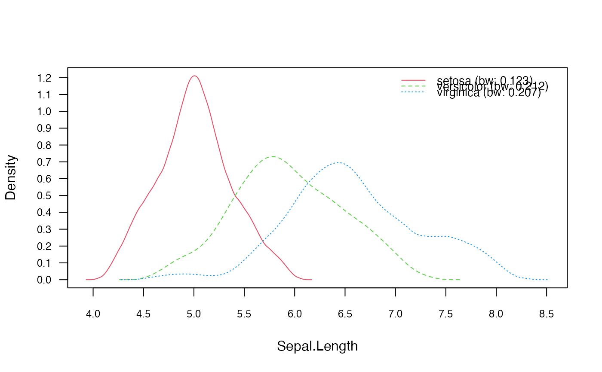
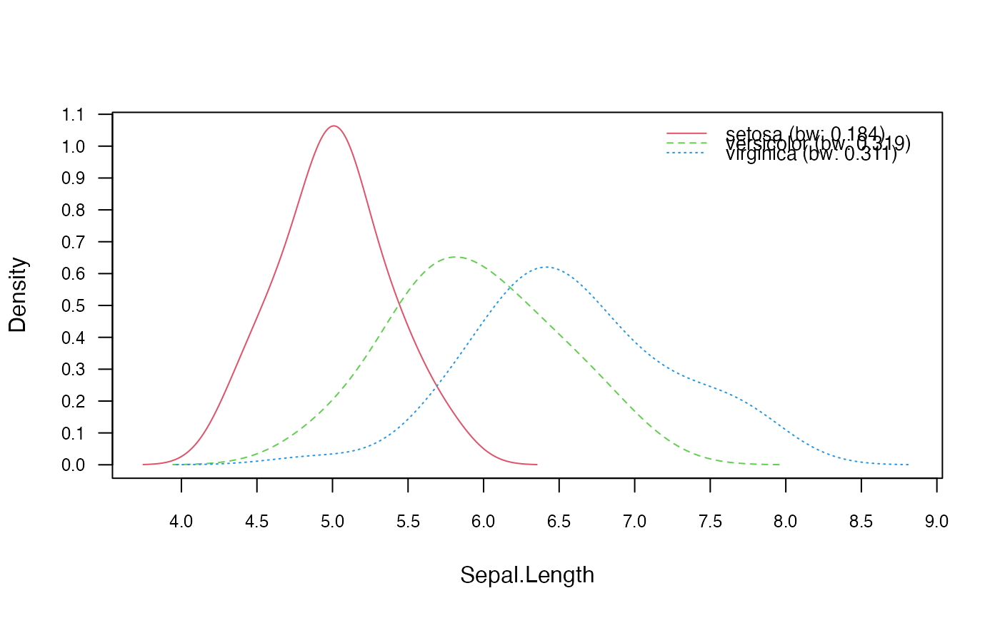
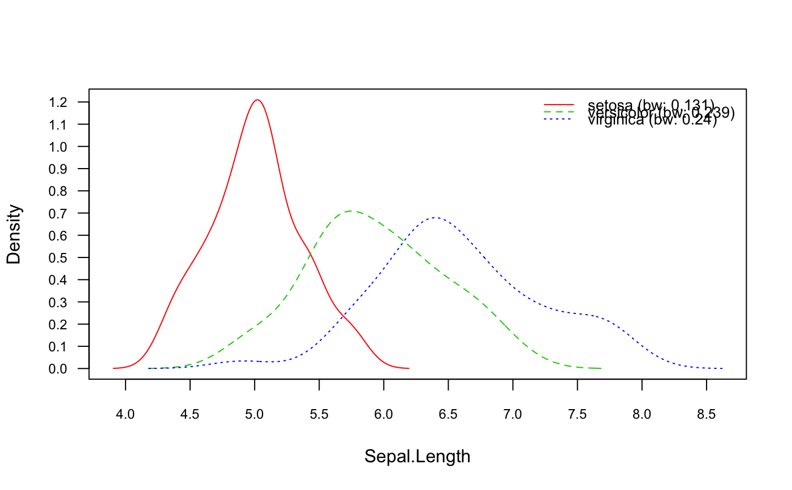

nonparametric_naive_bayes.Rdnonparametric_naive_bayes is used to fit the Non-Parametric Naive Bayes model in which all class conditional distributions are non-parametrically estimated using kernel density estimator and are assumed to be independent.
nonparametric_naive_bayes(x, y, prior = NULL, ...)
| x | matrix with metric predictors (only numeric matrix accepted). |
|---|---|
| y | class vector (character/factor/logical). |
| prior | vector with prior probabilities of the classes. If unspecified, the class proportions for the training set are used. If present, the probabilities should be specified in the order of the factor levels. |
| ... | other parameters to |
nonparametric_naive_bayes returns an object of class "nonparametric_naive_bayes" which is a list with following components:
list with two components: x (matrix with predictors) and y (class variable).
character vector with values of the class variable.
nested list containing density objects for each feature and class.
numeric vector with prior probabilities.
the call that produced this object.
This is a specialized version of the Naive Bayes classifier, in which all features take on real values (numeric/integer) and class conditional probabilities are estimated in a non-parametric way with the kernel density estimator (KDE). By default Gaussian kernel is used and the smoothing bandwidth is selected according to the Silverman's 'rule of thumb'. For more details, please see the references and the documentation of density and bw.nrd0.
The Non-Parametric Naive Bayes is available in both, naive_bayes() and nonparametric_naive_bayes(). The latter does not provide a substantial speed up over the general naive_bayes() function but it is meant to be more transparent and user friendly.
The nonparametric_naive_bayes and naive_bayes() are equivalent when the latter is used with usekernel = TRUE and usepoisson = FALSE; and a matrix/data.frame contains only numeric variables.
The missing values (NAs) are omitted during the estimation process. Also, the corresponding predict function excludes all NAs from the calculation of posterior probabilities (an informative warning is always given).
Silverman, B. W. (1986). Density Estimation for Statistics and Data Analysis. Chapman & Hall.
# library(naivebayes) data(iris) y <- iris[[5]] M <- as.matrix(iris[-5]) ### Train the Non-Parametric Naive Bayes nnb <- nonparametric_naive_bayes(x = M, y = y) head(predict(nnb, newdata = M, type = "prob"))#> setosa versicolor virginica #> [1,] 1.0000000 3.066728e-09 9.020367e-11 #> [2,] 0.9999999 4.873896e-08 1.352291e-09 #> [3,] 1.0000000 1.985693e-08 1.152477e-09 #> [4,] 1.0000000 1.151469e-08 6.592116e-10 #> [5,] 1.0000000 8.886374e-10 8.621293e-11 #> [6,] 1.0000000 3.842342e-09 5.960213e-09### Equivalent calculation with general naive_bayes function: nb <- naive_bayes(M, y, usekernel = TRUE) head(predict(nb, type = "prob"))#> setosa versicolor virginica #> [1,] 1.0000000 3.066728e-09 9.020367e-11 #> [2,] 0.9999999 4.873896e-08 1.352291e-09 #> [3,] 1.0000000 1.985693e-08 1.152477e-09 #> [4,] 1.0000000 1.151469e-08 6.592116e-10 #> [5,] 1.0000000 8.886374e-10 8.621293e-11 #> [6,] 1.0000000 3.842342e-09 5.960213e-09### Change kernel nnb_kernel <- nonparametric_naive_bayes(x = M, y = y, kernel = "biweight") plot(nnb_kernel, 1, prob = "conditional")### Adjust bandwidth nnb_adjust <- nonparametric_naive_bayes(M, y, adjust = 1.5) plot(nnb_adjust, 1, prob = "conditional")### Change bandwidth selector nnb_bw <- nonparametric_naive_bayes(M, y, bw = "SJ") plot(nnb_bw, 1, prob = "conditional")### Obtain tables with conditional densities # tables(nnb, which = 1)